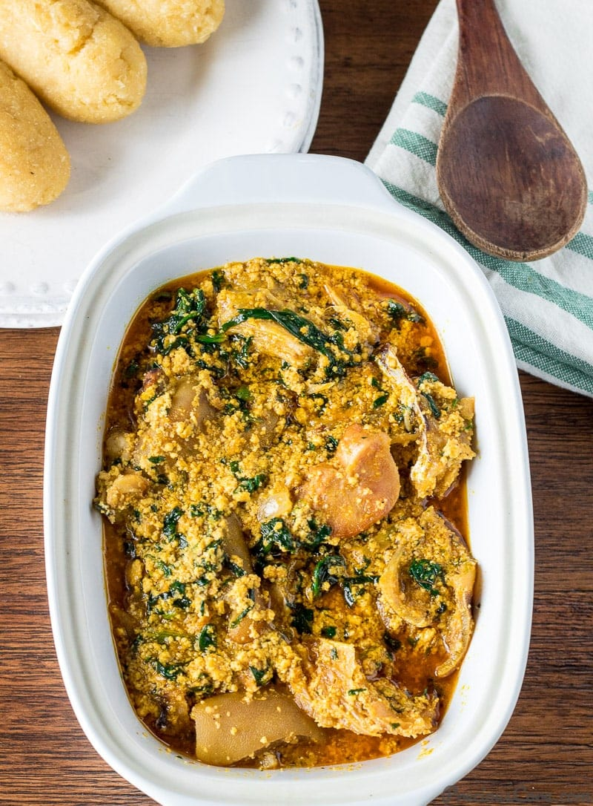
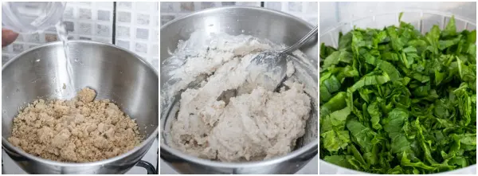
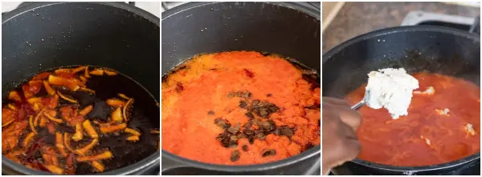
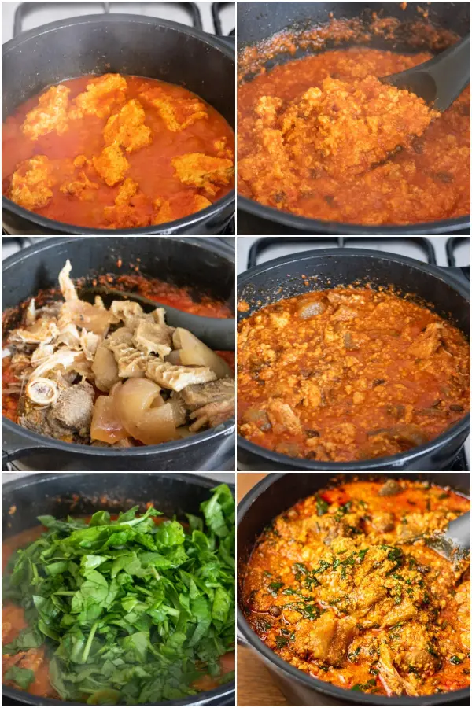
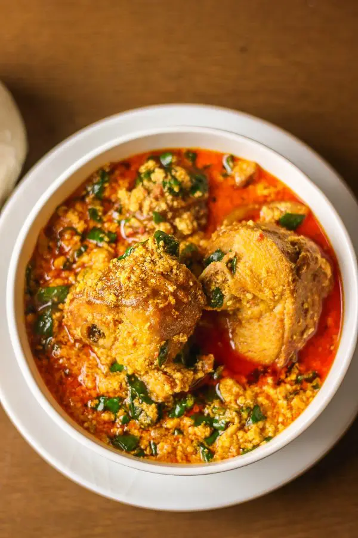

Egusi Soup

Description
Egusi Soup is a finger-licking good Nigerian soup made with a white variety of pumpkin seeds. It is spicy, nutty with exotic African flavors and so rich thanks to the variety of meats and fish often used! This Egusi soup recipe is insanely delicious and easy to make.
So friends, in order not to keep you waiting for so long, let me show you how to cook egusi soup in easy steps. Serve this Nigerian soup with pounded yam, amala, eba, tuwo or any other swallow of choice
What is Egusi soup made of?
- Ground egusi (melon)
- Palm oil
- Smoked turkey
- Smoked mackerel
- salt
- Beef stock cubes
- Nigerian pepper mix
- Dried prawns
- Iru woro or pete (locust beans): substitute with ogiri or omit if you do not have it
- Spinach: any type of spinach can be used but I used baby spinach
Steps to Cook Egusi Soup
- Add ground melon to a bowl, add about a cup of water and mix to form a paste then set aside
- Wash and chop the spinach, drain in a colander and set aside

- Place a big pan on medium heat, add palm oil and heat for about 3 minutes (Do not bleach oil). Add the reserved chopped onions and Saute till translucent
- Add pepper mix, locust beans and stir to combine. Bring to boil for 5 minutes.
- Add the egusi paste in bits to pepper, reduce the heat, do not stir and cover the pot with a lid. Cook for another 10 minutes.

- Remove the lid and gently stir the soup. The egusi would be lumpy at this point, use the back of a ladle to break the lumps into desired size/texture
- Add smoked turkey, ground crayfish and crayfish, beef stock (if using) and stir to combine. Add bouillon cubes, taste and adjust accordingly. I didn't add salt to this soup as the smoked turkey and mackerel already contained salt. Continue to cook for another 10 minutes, check at intervals and stir to avoid burning if need be.
- Add shredded smoked mackerel and gently stir into the soup. Add chopped spinach, stir to combine and cook for another 3 to 5 minutes. Take it off the heat, allow to cool for about 10 minutes before serving

Serve and enjoy with any Nigerian swallow of choice. You can even serve with white recipe.

Back To Top
Back To Main Menu